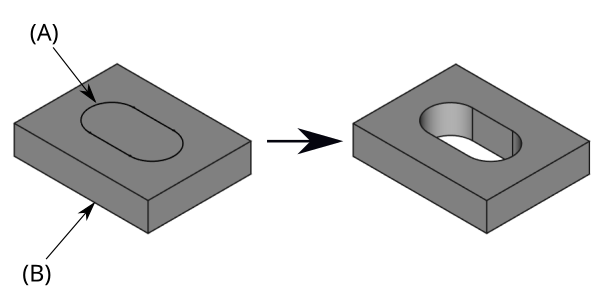

PartDesign Pocket/cs
This documentation is not finished. Please help and contribute documentation.
GuiCommand model explains how commands should be documented. Browse Category:UnfinishedDocu to see more incomplete pages like this one. See Category:Command Reference for all commands.
See WikiPages to learn about editing the wiki pages, and go to Help FreeCAD to learn about other ways in which you can contribute.
|
PartDesign Kapsa |
| Umístění Menu |
|---|
| Tvorba dílu → Subtraktivní prvky → Prvky |
| Pracovní stoly |
| PartDesign |
| Výchozí zástupce |
| Nikdo |
| Představen ve verzi |
| - |
| Viz také |
| PartDesign Deska, PartDesign Otvor |
Popis
Nástroj Pocket vyřezává tělesa vytlačováním náčrtu nebo plochy tělesa podél přímé dráhy.
{kind=link}

On the left, Sketch profile (A) was mapped to the top face of base solid (B). On the right, result after pocketing through.
Použití
Možnosti
When creating a pocket, or after double-clicking an existing pocket in the Tree View, the Pocket parameters task panel is shown. It offers the following settings:
{kind=link}
Start
Sets where the pocket begins. By default the pocket starts at the sketch or face used as its profile. introduced in 26.3
- Profile plane (default): the pocket starts directly at the profile's sketch plane or face.
- Offset: the pocket starts at a numeric distance from the profile, entered in the Start Offset field.
- Reference: the pocket starts at a face, datum plane, or sketch selected with the Pick Reference button.
This is useful to create multiple features from a single master sketch without needing separate offset planes for each one.
Direction
You can select how the pocket is created:
- One sided: the pocket extends on one side of the face.
- Two sided: the pocket extends on both sides of the face. Two sub-menus (Side 1 and Side 2) appear to define the pocket for each side.
- Symmetric: the pocket is symmetrical with respect to the original face.
Type
Type offers five different ways of specifying the length of the pocket:
Dimension
Při vytváření kapsy nabízí dialogové okno 'parametrů kapsy' čtyři různé způsoby pro zadání hloubky do jaké bude kapsa vysunuta
Rozměr
Zadání číselné hodnoty pro hloubku kapsy. Defaultní směr pro vysunutí je do podkladu. Vysunutí je ve směru kolmém k definované rovině náčrtu. Záporné hodnoty nejsou možné.
Do první
Kapsa bude vysunuta až do první plochy podkladu ve směru vysunutí. Jinými slovy odebírá všechen materiál až dokud nenarazí na prázdný prostor.
Skrz celý
Kapsa vyseká všechen materiál ve směru vysunutí. S volbou Symetricky k rovině bude kapsa vysekána celým materiálem v obou směrech.
Až k ploše
Kapsa bude vysunuta až k ploše podkladu, která může být vybrána kliknutím na ni.
Through all
The pocket will extend up to the last face of the support it encounters in its direction. With the option Symmetric to plane the pocket will cut through all material in both directions. Note that for technical reasons, Through All is actually a 10 meter deep pocket. If you need deeper pockets, use the type Dimension.
To first
The pocket will extend up to the first face of the support it encounters in its direction.
Up to face
The pocket will extend up to a face. Press the Select face button and select a face or a datum plane from the Body.
Two dimensions
This allows to enter a second length in which the pocket should extend in the opposite direction. The directions can be switched by checking the Reversed option.
Up to shape
introduced in 1.0: The pocket will extend up to the selected shape. Optionally press the Select shape button and select a shape. Leave the Select all faces checkbox enabled or disable it, press the Select button and select the faces up to which the pocket should be created.
Offset to face
Offset from face at which the pocket will end. This option is only available if Type is Through all, To first or Up to face.
Length
Defines the length of the pocket. This option is only available if Type is Dimension or Two dimensions. The length is measured along the direction vector, or along the normal of the sketch or face. Negative values are not possible. Use the Reversed option instead.
2nd length
Defines the length of the pocket in the opposite direction. This option is only available if Type is Two dimensions.
Symmetric to plane
Check this option to extrude half the given length to either side of the sketch or face, if Type is Dimension, or Through all if that is the Type.
Reversed
Reverses the direction of the pocket.
Direction
Direction/edge
You can select the direction of the extrusion:
- Sketch normal or Face normal: The sketch or face is extruded in the opposite direction of its normal. If you have selected several sketches or faces to be extruded, the normal of the first one will be used.
- Select reference…: The sketch or face is extruded in the opposite direction of a straight edge or a datum line selected from the Body.
- Custom direction: The sketch or face is extruded in the direction of the specified vector.
Show direction
If checked, the pocket direction will be shown. In case the pocket uses a Custom direction, it can be changed.
Length along sketch normal
If checked, the pocket length is measured along the sketch or face normal, otherwise along the custom direction.
Taper angle
Tapers the pocket in the extrusion direction by the given angle. A positive angle means the outer pocket border gets wider. Note that inner structures receive the opposite taper angle. This is done to facilitate the design of molds and molded parts. This option is only available if Type is Dimension or Two dimensions.
2nd taper angle
Tapers the pocket in the opposite extrusion direction by the given angle. See Taper angle. This option is only available if Type is Two dimensions.
Properties
Data
Part Design
- ÚdajeRefine (
Bool): True or false. Cleans up residual edges left after the operation. This property is initially set according to the user's settings (found in Preferences → Part Design → General → Model settings).
- ÚdajeType (
Enumeration): Defines how the pocket will be extruded, see Options. - ÚdajeLength (
Length): Defines the length of the pocket, see Options. - ÚdajeLength2 (
Length): Second pocket length in case the ÚdajeType is TwoLengths, see Options. - ÚdajeUse Custom Vector (
Bool): If checked, the pocket direction will not be the normal vector of the sketch but the given vector, see Options. - ÚdajeDirection (
Vector): Vector of the pocket direction if ÚdajeUse Custom Vector is used. - ÚdajeReference Axis (
LinkSub) - ÚdajeAlong Sketch Normal (
Bool): If true, the pocket length is measured along the sketch normal. Otherwise and if ÚdajeUse Custom Vector is used, it is measured along the custom direction. - ÚdajeUp To Face (
LinkSub): A face the pocket will extrude up to, see Options. - ÚdajeOffset (
Length) - ÚdajeTaper Angle (
Angle) - ÚdajeTaper Angle2 (
Angle)
Sketch Based
- ÚdajeProfile (
LinkSub) - ÚdajeMidplane (
Bool) - ÚdajeReversed (
Bool) - ÚdajeAllow Multi Face (
Bool)
Start
- ÚdajeStart Type (
Enumeration): sets how the pocket start is defined (Profile plane, Offset, Reference), see Options. introduced in 26.3 - ÚdajeStart Offset (
Length): distance between the profile and the start of the pocket. Only used if ÚdajeStart Type is Offset. introduced in 26.3 - ÚdajeStart Reference (
LinkSub): a face, plane, or sketch the pocket starts from. Only used if ÚdajeStart Type is Reference. introduced in 26.3
Omezení
Omezení
- Použijte Rozměr nebo Skrz vše kdykoliv je to možné, protože s ostatními typy jsou někdy problémy, když jsou vzorkovány
- Jinak objekt kapsa má stejná omezení jako objekt Deska.
- Helper tools: New Body, New Sketch, Attach Sketch, Edit Sketch, Validate Sketch, Check Geometry, Sub-Shape Binder, Clone
- Modeling tools:
- Additive tools: Pad, Revolution, Additive Loft, Additive Pipe, Additive Helix, Additive Box, Additive Cylinder, Additive Sphere, Additive Cone, Additive Ellipsoid, Additive Torus, Additive Prism, Additive Wedge
- Subtractive tools: Pocket, Hole, Groove, Subtractive Loft, Subtractive Pipe, Subtractive Helix, Subtractive Box, Subtractive Cylinder, Subtractive Sphere, Subtractive Cone, Subtractive Ellipsoid, Subtractive Torus, Subtractive Prism, Subtractive Wedge
- Boolean: Boolean Operation
- Dress-up tools: Fillet, Chamfer, Draft, Thickness
- Transformation tools: Mirror, Linear Pattern, Polar Pattern, Multi-Transform, Scale
- Additional tools: Shape Binder, Involute Gear, Sprocket, Shaft Design Wizard
- Context menu: Suppressed, Set Tip, Move Object To…, Move Feature After…
- Preferences: Preferences, Fine tuning
- Getting started
- Installation: Download, Windows, Linux, Mac, Additional components, Docker, AppImage, Ubuntu Snap
- Basics: About FreeCAD, Interface, Mouse navigation, Selection methods, Object name, Preferences, Workbenches, Document structure, Properties, Help FreeCAD, Donate
- Help: Tutorials, Video tutorials
- Workbenches: Std Base, Assembly, BIM, CAM, Draft, FEM, Inspection, Material, Mesh, OpenSCAD, Part, PartDesign, Points, Reverse Engineering, Robot, Sketcher, Spreadsheet, Surface, TechDraw, Test Framework
- Hubs: User hub, Power users hub, Developer hub